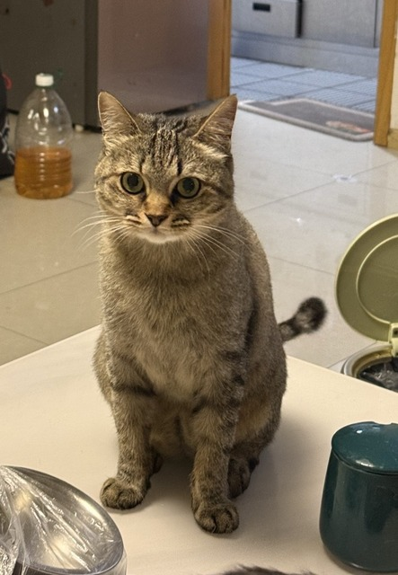

豌豆
生日5月21日年龄2岁体重8 KG
性格非常好的天使小猫，谁都能摸，进门会跟人打招呼，一喊就会来，在家与世无争。背部是斑点图案，整体是狸花猫一样的深棕色。
Cat Daily
Cat Daily
Chengdu Pet Journal
记录成都家里三只猫和一只狗的日常巡视、吃喝和小脾气。
年龄
2岁 / 6岁 / 4岁 / 12岁
体重
8 KG / 11 KG / 13 KG / 9 KG
成都今天阴天，当前 28°C，预计 22°C 到 33°C。家里的三猫一狗今日日记已经建档，等待白天巡视逐步补完。 今天已经写入 2/24 个小时槽位，最近一次更新在 22:00。
打开 2026.06.03
性格非常好的天使小猫，谁都能摸，进门会跟人打招呼，一喊就会来，在家与世无争。背部是斑点图案，整体是狸花猫一样的深棕色。
长了一张厌世脸，不喜欢被抱但喜欢贴贴，特别能吃也能拉，是家里的猫老大。颜色是灰黑色，条纹相间。
白灰相间，懒但会主动打招呼，肚肚粉粉嫩嫩很好捏但不喜欢被捏，打不过还要主动调戏胡豆。
家里的狗警察，三只猫都不敢惹她，脾气很有小老太太的感觉。
豌豆是性格很好的天使狸花猫，进门会打招呼，一喊就来；胡豆是家里的猫老大，厌世脸，不爱被抱但喜欢贴贴，特别能吃也能拉；土豆是白灰相间的懒猫，肚肚粉粉嫩嫩但不喜欢被捏，会主动打招呼，也会手贱调戏胡豆；波比是12岁的泰迪小老太太，家里的狗警察，三只猫都不敢惹她。 豌豆背部是斑点图案，整体是狸花猫一样的深棕色；胡豆颜色是灰黑色，条纹相间。
公开站点只展示训练统计和流程，不发布家庭监控原图。
待确认样本
139
来自本机 ROI 事件截图，公开站点只展示统计。
身份参考图
117
豌豆、胡豆、土豆、波比的已入库裁剪图。
ROI 区域
10
卫生间和客厅的行为区域配置。
最新样本
2026-06-03T22:39:06
最近一次本机事件截图时间。
从 ROI 事件截图、漏检截图和定时抓拍中沉淀候选样本。
本机标注页面确认豌豆、胡豆、土豆、波比或不确定。
只把确认过的裁剪图加入身份模型训练，保留旧模型可回滚。
新模型先跑本地监控和历史截图回放，再替换生产配置。
本机负责看家和训练，公开站点负责展示日记、宠物档案和项目进度。
RTSP + OpenCV 持续读取双摄像头画面，本机 WebUI 查看检测框、事件状态和日志。
卫生间、猫窝、沙发、茶几等区域可视化圈选，用连续命中降低误判。
YOLO 找位置，参考图模型判断豌豆、胡豆、土豆、波比，低置信样本进入人工确认。
按小时整理行为记录，夜间可跳过，生成每日封面和静态日记站。
监控截图沉淀为样本，人工确认后进入训练队列，模型按版本更新和回滚。
公开站点展示日报、宠物档案、项目能力和训练状态，不泄露本机监控原图。